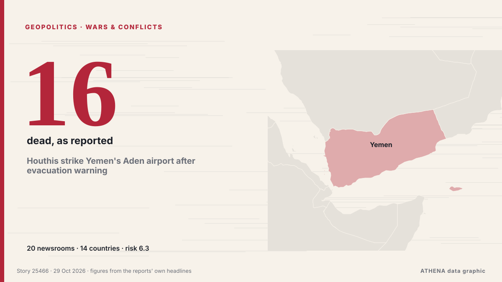

Houthis strike Yemen's Aden airport after evacuation warning

ADEN/DUBAI, Oct 28 - Yemen's Houthis attacked Aden airport on Wednesday, government officials said, after the Iran-aligned group warned people to evacuate the facility as fighting escalated in the… de The Straits Times
Relayé de façon indépendante par 20 médias dans 14 pays depuis le 23 oct. ; premier à l'annoncer : Asharq Al-Awsat (English) ; la couverture faiblit. ATHENA juge le risque élevé (6.3/10), surtout en raison de la gravité des dommages décrits et de sa portée géographique et sectorielle. La confiance est de 87 % (élevée) : 20 médias indépendants le confirment, avec une fiabilité moyenne des sources de 79 %.
Pourquoi c'est important: La mer Rouge et le détroit de Bab el-Mandeb forment la route maritime la plus courte entre l'Asie et l'Europe, par le canal de Suez. Les attaques contre les navires marchands obligent à contourner l'Afrique, avec un surcoût en temps et en argent pour le commerce mondial.
Ce qui a changé : 3 nouveaux articles de 3 rédactions dans les 24 heures jusqu'au 29 oct..
Premier titre : Houthis launch attacks on Saudi Arabia and Yemen’s Aden
Les titres sont affichés en anglais, tels que publiés.
En un coup d'œil
Sélectionné, noté et rédigé par la méthodologie publiée d'ATHENA. Aucun rédacteur n'intervient sur un événement en particulier. Comment il est produit ›
| 23 Oct 16:51 UTC | 1 |
|---|---|
| 23 Oct 22:51 UTC | 0 |
| 24 Oct 04:51 UTC | 1 |
| 24 Oct 10:51 UTC | 7 |
| 24 Oct 16:51 UTC | 4 |
| 24 Oct 22:51 UTC | 0 |
| 25 Oct 04:51 UTC | 0 |
| 25 Oct 10:51 UTC | 0 |
| 25 Oct 16:51 UTC | 2 |
| 25 Oct 22:51 UTC | 3 |
| 26 Oct 04:51 UTC | 1 |
| 26 Oct 10:51 UTC | 0 |
| 26 Oct 16:51 UTC | 0 |
| 26 Oct 22:51 UTC | 0 |
| 27 Oct 04:51 UTC | 0 |
| 27 Oct 10:51 UTC | 0 |
| 27 Oct 16:51 UTC | 0 |
| 27 Oct 22:51 UTC | 0 |
| 28 Oct 04:51 UTC | 1 |
| 28 Oct 10:51 UTC | 17 |
| 28 Oct 16:51 UTC | 2 |
| 28 Oct 22:51 UTC | 1 |
| 29 Oct 04:51 UTC | 0 |
| 29 Oct 10:51 UTC | 0 |
| 29 Oct 16:51 UTC | 1 |
| 23 Oct 16:56 UTC | 3.8 |
|---|---|
| 24 Oct 07:19 UTC | 0.0 |
| 24 Oct 14:10 UTC | 4.4 |
| 24 Oct 15:08 UTC | 5.8 |
| 24 Oct 15:53 UTC | 5.0 |
| 24 Oct 15:57 UTC | 5.9 |
| 24 Oct 18:28 UTC | 5.5 |
| 24 Oct 21:36 UTC | 5.8 |
| 25 Oct 21:02 UTC | 4.9 |
| 26 Oct 04:04 UTC | 6.3 |
| 28 Oct 16:37 UTC | 6.8 |
| 29 Oct 20:55 UTC | 6.3 |
Pourquoi ces chiffres
Importance
Risque
Confiance
La couverture : qui l'a annoncé, et quand
titre tel que publié · ouvre l'original- Asharq Al-Awsat (English) · Arabie saoudite · Saudi ArabiaAden Governor After Escaping Airport Missile Attack: Hostilities Will Not Deter People of Yemen
- Arab News · Arabie saoudite · Saudi ArabiaAden governor after escaping airport missile attack: hostilities will not deter people of Yemen
- Xinhua (English) — page reader · Chine · ChinaUrgent: Ballistic missile attack triggers loud explosions in Yemen's Aden
- Anadolu Agency (English) · Turquie · TurkeyYemen says Houthis target Aden airport, port and coast guard facilities with ballistic missiles
- Middle East Eye · INTExplosions heard in Yemen's city of Aden
- Middle East Eye · INTYemen's Houthis claim attack on Aden naval base, military camp
- Türkiye Today · Turquie · TurkeyYemen’s Houthis claim attack on Aden after accusing Saudi Arabia of deadly strikes
- The Korea Times · Corée du Sud · South KoreaHouthis attack Yemen's Aden, say Saudi strikes kill 16
- The Straits Times · Singapour · SingaporeIran-allied Houthis say they attacked Saudi oil sites, strikes reported on Yemen’s Aden
- France 24 English · FranceYemen's Houthi rebels claim new attacks on oil facilities and airports across Saudi Arabia
- The New Arab · INTHouthi missiles target Aden airport, coastguard
- Al Jazeera English · QatarHouthis launch attacks on Saudi Arabia and Yemen’s Aden
- Anadolu Agency (English) · Turquie · TurkeyExplosion rocks Yemen's Aden as suspected Houthi missile lands near military headquarters
- Arab Times · Koweït · KuwaitExplosion Rocks Yemen’s Aden as Suspected Houthi Missile Lands in Remote Area
- Anadolu Agency (English) · Turquie · TurkeyYemen accuses Houthis of targeting displacement camp with 3 ballistic missiles
- Mehr News (English) · IranYemen says missile strikes hit Saudi mercenaries
- Middle East Eye · INTHouthis claim missile attacks on Yemen's Aden, Lahij
- Anadolu Agency (English) · Turquie · TurkeyHouthis claim missile attacks on Saudi forces in Yemen's Aden, Lahij
- Oman Observer · OmanAnsar Allah call for immediate evacuation of Aden airport
- Business Recorder · PakistanYemen's Houthis call for immediate evacuation of Aden airport
- The Straits Times · Singapour · SingaporeHouthis strike Yemen's Aden airport after evacuation warning
- Xinhua (English) — page reader · Chine · ChinaHouthi missile triggers blast near Yemen's Aden airport
- Türkiye Today · Turquie · TurkeyHouthis claim 11 killed in Saudi strikes, urge Aden airport evacuation
- Mehr News (English) · IranEvacuate Aden Airport immediately: Yemen’s Armed Forces spox
- Al-Monitor · États-Unis · United StatesHouthis call for immediate evacuation of Aden airport as fighting intensifies in Yemen
- Al-Monitor · États-Unis · United StatesHouthis strike Yemen's Aden airport after evacuation warning
- Arab News · Arabie saoudite · Saudi ArabiaHouthis strike Aden airport with two ballistic missiles
- Anadolu Agency (English) · Turquie · TurkeyHouthis call for evacuation of Yemen’s Aden airport amid escalation
- RTÉ News · Irlande · IrelandHouthis target Aden after 14 killed in strikes in Yemen
- Xinhua (English) — page reader · Chine · ChinaFresh explosions heard near Yemen's Aden airport after Houthi warning
- The National · Émirats arabes unis · United Arab EmiratesMiddle East latest: Oil prices decline on fresh diplomatic efforts in Iran war
- Anadolu Agency (English) · Turquie · TurkeyMissile lands near Yemen's Aden airport following Houthi threats to target facility
- Oman Observer · OmanStrike hits Aden airport after evacuation warning
- The New Arab · INTHouthis say deadly Saudi strikes hit Yemen as they target Aden
- Middle East Eye · INTAir traffic suspended after missiles target Aden airport
- Gulf News · Émirats arabes unis · United Arab Emirates2 Houthi missile strikes on Aden Airport spark aviation safety concerns in Yemen
- Anadolu Agency (English) · Turquie · TurkeyYemen’s Aden Airport resumes operations after temporary suspension following Houthi strike